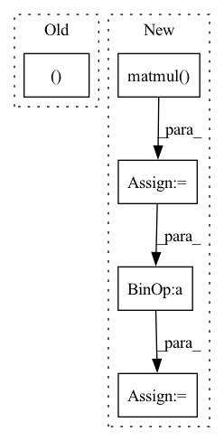

Pattern ID :17982

Before Change
// Get projection matrix for tgt camera frame to source pixel frame
proj_cam_to_src_pixel = intrinsics @ rot_mat // [B, 3, 3]
src_pixel_coords, computed_depth = cam2pixel2(
cam_coords, proj_cam_to_src_pixel, None, padding_mode) // [B,H,W,2]
projected_img = F.grid_sample(
img, src_pixel_coords, padding_mode=padding_mode, align_corners=True)
After Change
B, _, H, W = img.size()
R = euler2mat(rot) // [B, 3, 3]
P = torch.matmul(intrinsics, R)
world_points = depth_to_3d(torch.ones(B, 1, H, W).type_as(img), intrinsics) // B 3 H W
cam_points = torch.matmul(P, world_points.view(B, 3, -1))
pix_coords = cam_points[:, :2, :] / (cam_points[:, 2, :].unsqueeze(1) + 1e-7)
pix_coords = pix_coords.view(B, 2, H, W)
pix_coords = pix_coords.permute(0, 2, 3, 1)
pix_coords[..., 0] /= W - 1
pix_coords[..., 1] /= H - 1
pix_coords = (pix_coords - 0.5) * 2
projected_img = F.grid_sample(img, pix_coords, padding_mode=padding_mode, align_corners=True)
In pattern: SUPERPATTERN
Frequency: 3
Non-data size: 5
Instances
Fragment ID: 59021198
Project Name: jiawangbian/sc_depth_pl
Commit Name: 6a50fb9e99035b26acd8d44a2965c6a5b8eaa4da
Time: 2022-08-18
Author: jiawang.bian@gmail.com
File Name: losses/inverse_warp.py
M Class Name: AnonimousClass
N Class Name: AnonimousClass
M Method Name: inverse_rotation_warp(4)
N Method Name: inverse_rotation_warp(4)
M Parent Class:
N Parent Class:
M File Name: losses/inverse_warp.py
N File Name: losses/inverse_warp.py
M Start Line: 275
M End Line: 284
N Start Line: 129
N End Line: 140
'>
Before Change
T_tgt_src = T_21[kp_inds]
R_tgt_src = T_tgt_src[:, :3, :3]
t_tgt_src = T_tgt_src[:, :3, 3].unsqueeze(-1)
svd_loss, R_loss, t_loss = SVD_loss(R_tgt_src, R_tgt_src_pred, t_tgt_src, t_tgt_src_pred, config["gpuid"])
dict_loss = {"R_loss": R_loss, "t_loss": t_loss}
return svd_loss, dict_loss
After Change
batch_size = R_tgt_src.size(0)
identity = torch.eye(3).unsqueeze(0).repeat(batch_size, 1, 1).to(config["gpuid"])
loss_fn = torch.nn.L1Loss()
R_loss = loss_fn(torch.matmul(R_tgt_src_pred.transpose(2, 1), R_tgt_src), identity)
t_loss = loss_fn(t_tgt_src_pred, t_tgt_src)
svd_loss = t_loss + alpha * R_loss
dict_loss = {"R_loss": R_loss, "t_loss": t_loss}
return svd_loss, dict_loss
'>
Fragment ID: 59021106
Project Name: utiasasrl/hero_radar_odometry
Commit Name: 6743b462d049c6197bb526b488f76355d1bba825
Time: 2021-05-30
Author: keenburn2004@gmail.com
File Name: utils/losses.py
M Class Name: AnonimousClass
N Class Name: AnonimousClass
M Method Name: supervised_loss(5)
N Method Name: supervised_loss(4)
M Parent Class:
N Parent Class:
M File Name: utils/losses.py
N File Name: utils/losses.py
M Start Line: 10
M End Line: 12
N Start Line: 4
N End Line: 27
'>
Before Change
embedding = self.dropout(self.embed(x))
conv_in = embedding.permute(0, 2, 1)
conv_out = self.conv(conv_in)
values, indices = conv_out.max(dim=-1)
conv_out = conv_out.permute(2, 0, 1)
rnn_out, _ = self.rnn(conv_out)
attention = (self.mask * rnn_out).mean(dim=0)
After Change
attention = torch.tanh(
self.local2attn(rnn_out) + self.global2attn(global_rnn_out)
).permute(1, 0, 2)
alpha = F.softmax(attention.matmul(self.attn_scale), dim=-1)
rnn_out = rnn_out.permute(1, 0, 2)
memory = (alpha * rnn_out).sum(dim=1)
output = self.fc(memory).squeeze(1)
return output
'>
Fragment ID: 59021149
Project Name: jaketae/deep-malware-detection
Commit Name: e2f5ae102005c60e7e0db3dc31a8d9c23fce276b
Time: 2020-11-26
Author: jaesungtae@gmail.com
File Name: models.py
M Class Name: AttentionRCNN
N Class Name: AttentionRCNN
M Method Name: forward(2)
N Method Name: forward(2)
M Parent Class: nn.Module
N Parent Class: nn.Module
M File Name: models.py
N File Name: models.py
M Start Line: 186
M End Line: 194
N Start Line: 196
N End Line: 206